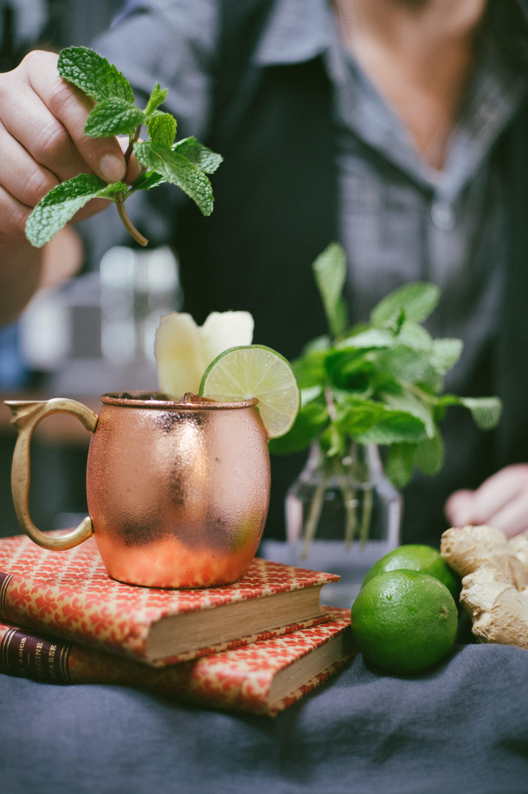
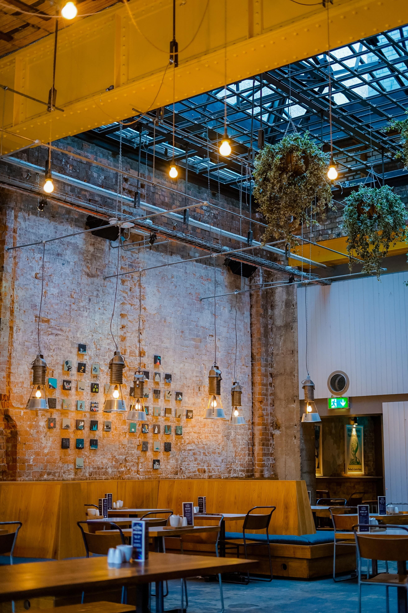
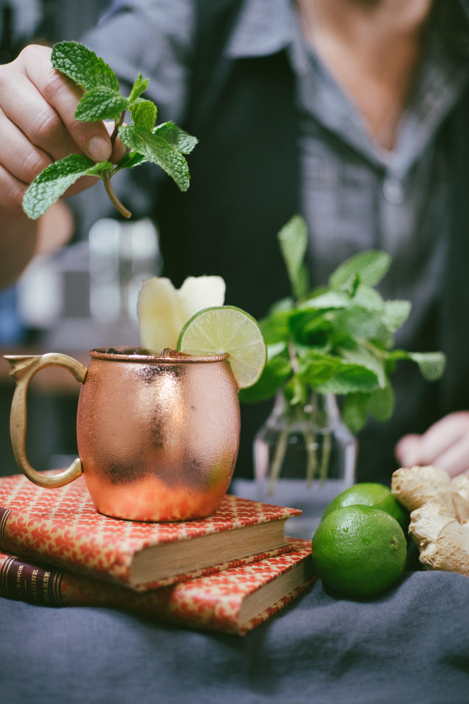
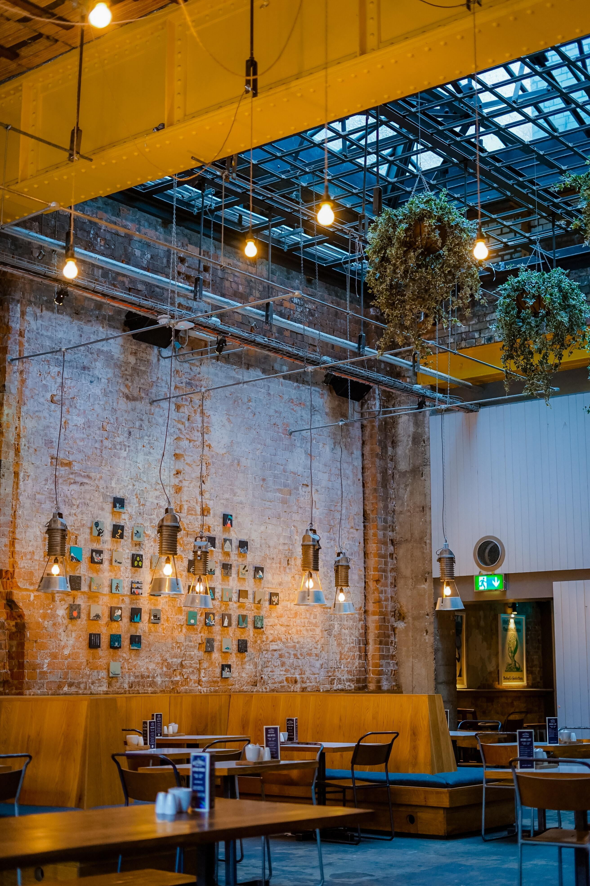
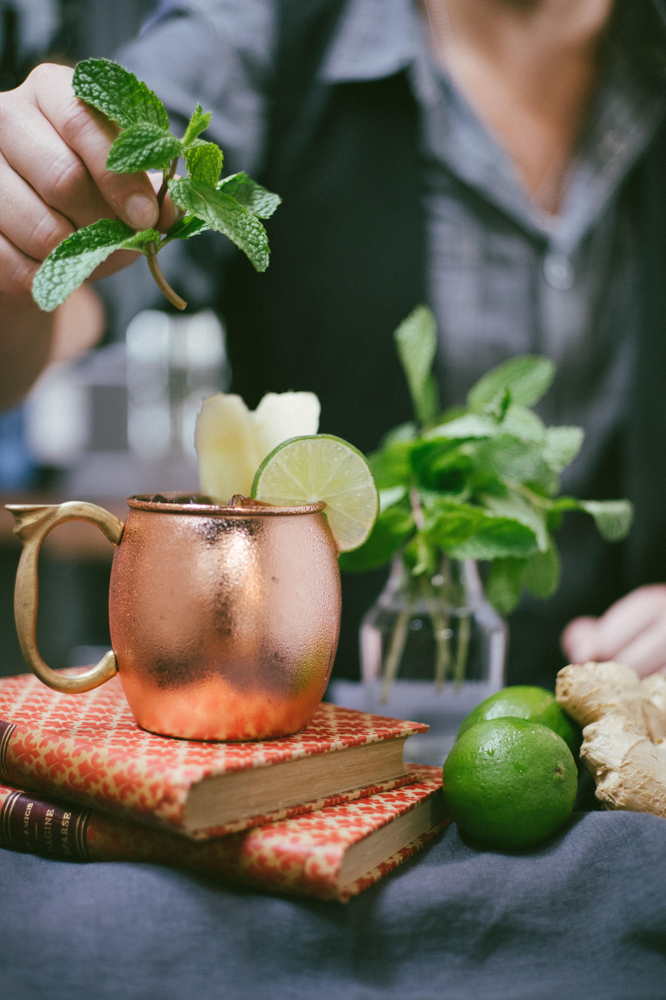
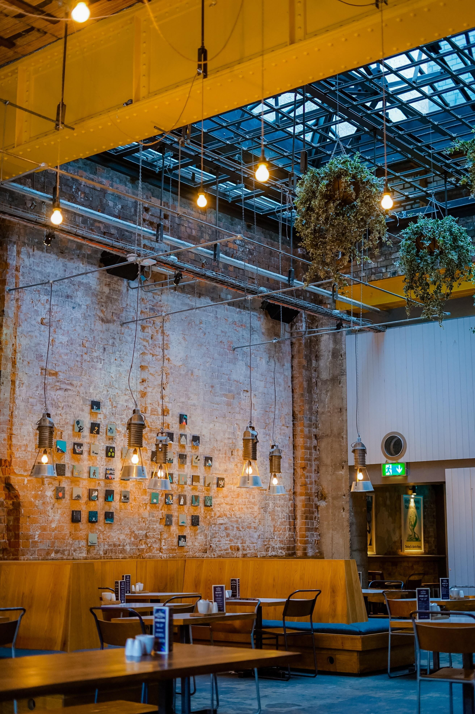

photo gallery

 



Feijoada is a stew of beans with beef and pork. It is commonly prepared in Portugal, Brazil, Angola, Cape Verde, Guinea-Bissau, Mozambique, Timor (West Timor and East Timor), Goa, and Macau, where it is also considered a national dish.

